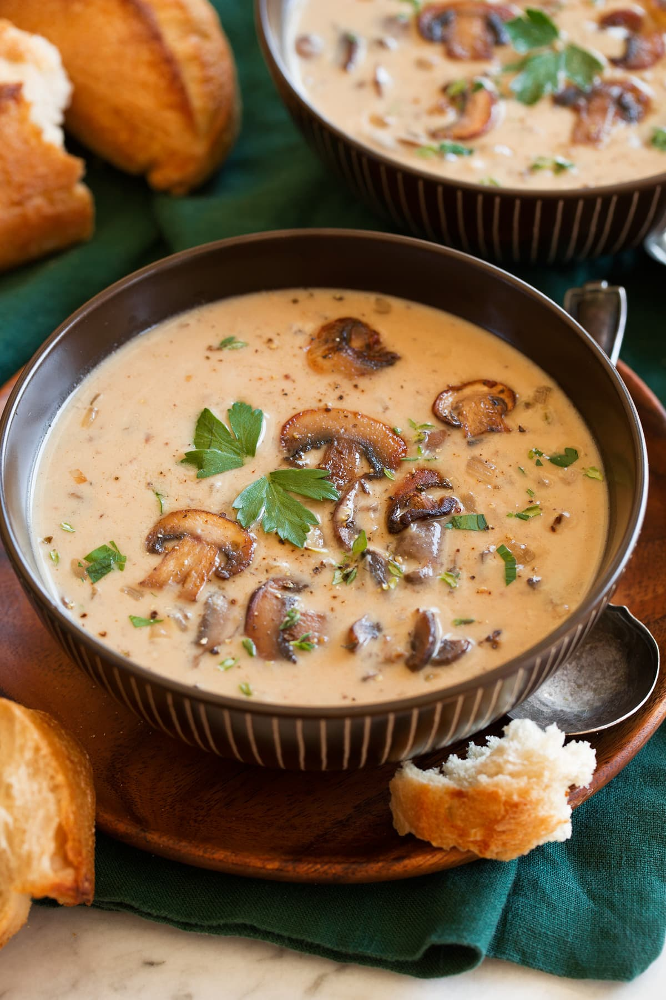

Creamy Mushroom Soup

Creamy. The creamiest of mushroom soups.
You wanna have soup. Why? You're just tired after a long cold day in the mines of Coldtown, the coldest town of all the cold towns in the world.
So you wanna kick back have a hot soup that will fill up your insides with that sweet, creamy feeling of something inside of you.
Didya also get a hardon? be fr.
Personally, of all the soups, the creamy mushroom soup is my favorite.
Such.. creaminess and mushroomness. Delicious.
ingredients
- 5 cups sliced fresh mushrooms
- 1 and a half cups of chicken stock
- Half cup chopped onion
- 1/8 teaspoon dried thyme
- 3 tablespoons butter
- 3 tablespoons all-purpose flour
- 1/4 teaspoon salt
- 1/4 teaspoon ground black pepper
- 1 cup of half-and-half or heavy cream
- 1 tablespoon sherry
Steps
- Gather all the ingredients.
- Simmer mushrooms, stock, onion, and thyme in a large heavy saucepan until vegetables are tender, 10 to 15 minutes.
- Carefully transfer the hot mixture to a blender or food processor. Cover and hold lid down with a potholder; pulse until creamy but still with some chunks of vegetable.
- Melt butter in the same saucepan. Whisk in flour until smooth. Whisk in salt and pepper. Slowly whisk in half-and-half and mushroom mixture.
- Bring soup to a boil and cook, stirring constantly, until thickened.
- Stir in sherry. Taste and season with more salt and pepper if needed.
- Enjoy the creaminess seeping inside of you.